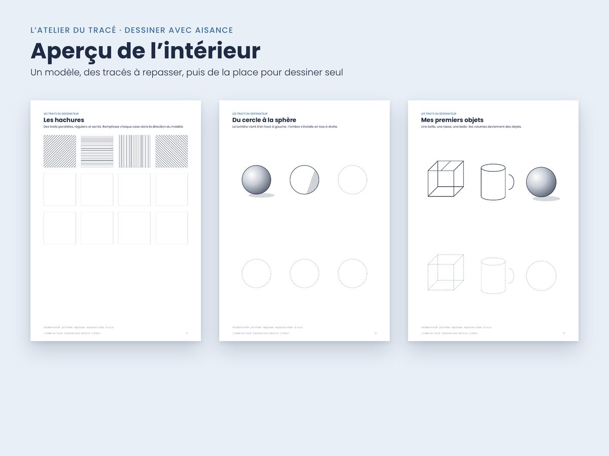

Dessin adulte
Dessiner avec aisance · Les traits du dessinateur
Lignes, hachures, valeurs, cercles, puis cube, sphère et cylindre : les bases pour se lancer.
Dessiner avec aisance
Vous avez toujours eu envie de dessiner sans savoir par où commencer ? On part des bases, avec la même méthode que nos cahiers d’écriture : un modèle, des tracés à repasser, puis de la place pour dessiner seul.
Lignes, hachures, valeurs, cercles, puis cube, sphère et cylindre : les bases pour se lancer.

Les 3 cahiers d’écriture et le cahier de dessin : 111 pages pour écrire et dessiner avec aisance.

Il suffit d’un crayon HB, d’un crayon 2B et d’une gomme. Imprimez les pages autant de fois que vous voulez.